4 Validating Forms With Cubits¶
When developing mobile apps, you’ll notice your screen types usually fall under one of these three buckets:
- Details
- Forms
- Master or list
The previous chapter taught you how to use Cubits to manage the state of the first type: the details screen. That was bloc library level one. The next chapter, aka level three, handles the third type: the master screen. This chapter is level two, where you tackle forms.
Managing the state of forms puts you in front of a whole different set of challenges. For example, this time, you won’t need to fetch data like you did for the details screen; your job is now to send whatever the user types to the server. Well, not quite whateverthe user types: What if they enter an email in an invalid format?
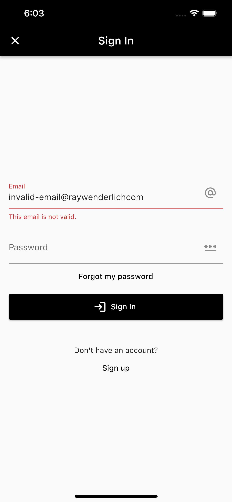
In fact, that’s where the bulk of the struggle comes from for screens: You have to keep track of what the user types, occasionally run some logic to make sure it’s in the expected format — a step known as validation — and meanwhile keep the user posted on the latest validation status of each field on the screen.
Validating what the user types before sending it to the server serves at least two purposes:
- Making sure the user doesn’t flood the database with invalid data.
- Avoiding unnecessary calls to the server if the data isn’t valid, which would cause delays and unnecessary data consumption.
WonderWords has a few different forms: the sign-in page, the sign-up page, the forgot password dialog and the update profile page. They’re pretty much the same as far as their code goes, but since sign-in screens are the ones users see most, this is the one you’ll focus on for this chapter. During that process, you’ll learn how to:
- Create model state classes for forms.
- Create reusable abstractions for your form fields.
- Manage the state of forms.
- Create a form that responds to different types of user interaction.
While going through this chapter, you’ll work on the starter project from this chapter’s assets folder.
Designing State Classes for Forms¶
Quick recap of the previous chapter: You create the state class to pack all the information your Cubit has to emit to your widgets, so they can rebuild themselves and reflect the new user state.
For example, the details screen you worked on in the last chapter had a few mutually exclusive types of state:
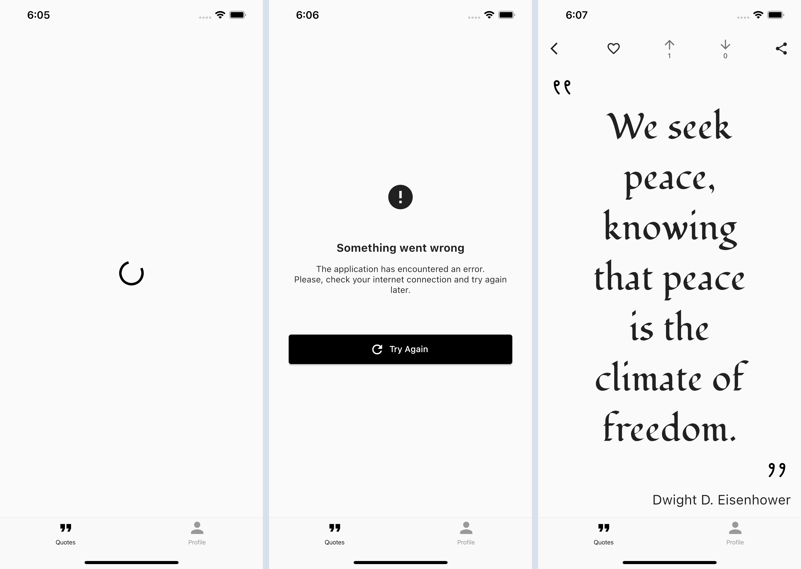
The screen was loading, showing an error or showing the quote — but never more than one at a time. You used a class hierarchy to model this in an enum-like way:
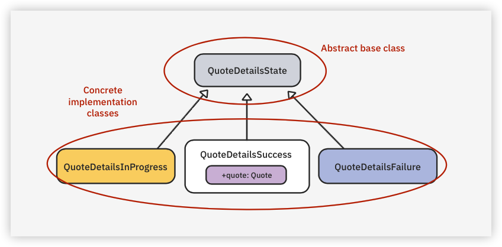
Now, for the sign-in screen, this will be very different — and a bit simpler:
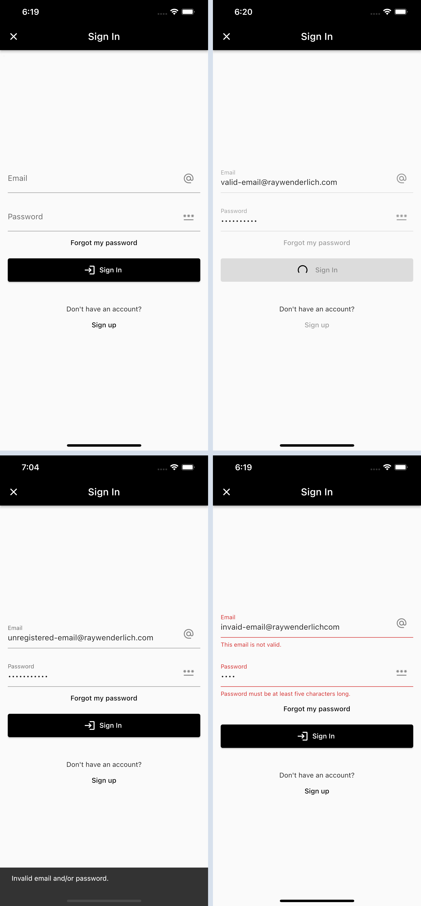
The screen contains only one type of state: It’s always showing the form. Sometimes it shows the form with a loading indicator; sometimes it shows the form with a snackbar; sometimes it shows the form with one or two invalid fields. Nonetheless, it’s alwaysshowing the form, so a single class is enough to model this.
To see this in practice, open the starter project and fetch the dependencies using the terminal to run the make get command from the root directory. Wait for the command to finish executing, and just ignore the errors in the project’s files for now. Some work will be necessary before you can build the app.
Now, open the sign_in_state.dart file under packages/features/sign_in/lib/src.
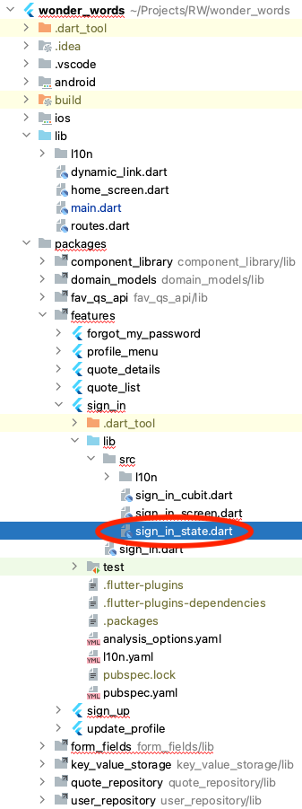
Replace // TODO: Create your state class. with:
class SignInState extends Equatable {
const SignInState({
// 1
this.email = const Email.unvalidated(),
this.password = const Password.unvalidated(),
// 2
this.submissionStatus,
});
final Email email;
final Password password;
final SubmissionStatus? submissionStatus;
// 3
SignInState copyWith({
Email? email,
Password? password,
SubmissionStatus? submissionStatus,
}) {
return SignInState(
email: email ?? this.email,
password: password ?? this.password,
submissionStatus: submissionStatus,
);
}
// 4
@override
List<Object?> get props => [
email,
password,
submissionStatus,
];
}
Here’s what’s going on in the code above:
- You need a separate property to hold the state of each field on the screen. You’ll dive into these
EmailandPasswordclasses in the next section. - This enum property will serve to inform your UI on the state of the latest submission try. If it’s
null, it means the user hasn’t tried to submit the form just yet. The property’s type isSubmissionStatus, an enum at the bottom of this same file. Take a look at it. - Creating a
copyWithfunction is a simple pattern that’s used a lot in Flutter. The only thing it does is instantiate a copy of the current object by changing just the properties you choose to pass on to the function when calling it. For example, if you calloldSignInState.copyWith(password: newPassword), you’ll get a newSignInStateobject that holds the same values asoldSignInState, except for thepasswordproperty, which will use thenewPasswordvalue instead. You can learn more about it in this article oncopyWith(). This function will come in handy when coding the Cubit later. - You learned all about
Equatableand thispropsproperty in the last chapter. Check out this overview ofEquatableif you need a refresher.
That’s all for the state class. You’ll now dig down one more level and dive into these field-specific classes. Email is already complete, but Password just contains a placeholder implementation and needs your help to start working.
Abstracting Form Fields With Formz¶
Still on the same sign_in_state.dart file, Command-click the Password class if you’re on macOS, or Control-click it if you’re on Windows. Alternatively, you can simply open the password.dart file under packages/form_fields/lib/src.
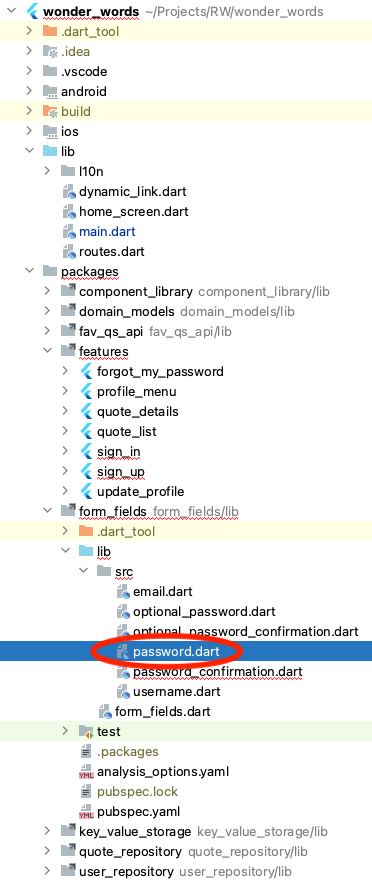
Notice that, by opening this new file, you stepped away from the sign_in package for a bit and are now on form_fields. The reason for that is the work you’ll do next will be shared among multiple features in the app. As you might remember, anything that’s shared between two or more feature packages needs to be in a third, independent package since features shouldn’t depend on one another.
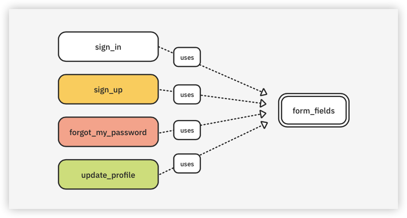
Now, back to work. Delete everything in password.dart, and insert this instead:
// 1
import 'package:formz/formz.dart';
// 2
class Password extends FormzInput<String, PasswordValidationError> {
// TODO: Add the constructors.
// TODO: Add the validator function.
}
enum PasswordValidationError {
empty,
invalid,
}
Disregard any errors for now. So far, you just:
- Added an
importto the Formz package, which is already listed as a dependency in this package’s pubspec.yaml. Formz helps you create classes to represent your fields’ states in a way that’s generic enough for you to reuse them for different screens. Although Formz isn’t part of the bloc library, both are from the same creator and work exceptionally well together. - This is how you create a class to encapsulate both the state and the validation rules of a form field in Formz. You just had to declare a class and extend
FormzInputfrom it. You’ll usePasswordfor all password fields in WonderWords.
When extending FormzInput, you had to specify two generic types within the angle brackets (<>):
- String: This indicates the type of
valuethis field can hold. For example, in the case of a quantity field in a shopping cart, this could be anint. Since this will actually hold a password typed by the user,Stringis the obvious choice. - PasswordValidationError: This is the type that distinguishes the different ways in which this field can be invalid. The common practice is to create a dedicated enum for each
FormzInputyou create, as you did withPasswordValidationErrorat the bottom of this file.
Now, replace // TODO: Add the constructors. with:
const Password.unvalidated([String value = '']) : super.pure(value);
const Password.validated([String value = '']) : super.dirty(value);
The first thing that might’ve jumped out at you is this lesser-known [String value = ''] syntax in the constructors. That one is easy: This is how you define a positionalbut at the same time optional parameter in Dart. You can check out Dart’s documentation on parameters if you want to know more about it.
The second thing is the fact that you’ve declared two constructors:
unvalidated, which calls thepureconstructor of thesuperclass.validated, which callsdirty— what a naughty constructor!
What’s happening here is that every time you create a FormzInput, you have to implement two constructors: pure and dirty. So, that’s what you did, except you added your own seasoning to it by giving these two constructors different names under your Password class: validated and unvalidated.
The reason for choosing these different names is just that they’re more aligned with the way you’ll be using them shortly.
Just a little about this in advance: You use the unvalidated constructor when you don’t want to validate your field’s value just yet — unvalidated doesn’t mean invalidated. For example, the SignInState class you created in the previous section uses this unvalidated constructor for its initial state. This allows you to have an empty value for both fields on the screen when you first open it — that is, without accusing any validation errors prematurely — since emails and passwords shouldn’t be empty.
Note
Don’t expect to fully grasp this just yet. It’ll all become clearer when you create your Cubit in the next section.
Lastly, remove // TODO: Add the validator function. from your code and add this instead:
@override
PasswordValidationError? validator(String value) {
if (value.isEmpty) {
return PasswordValidationError.empty;
} else if (value.length < 5 || value.length > 120) {
return PasswordValidationError.invalid;
} else {
return null;
}
}
This is the function Formz runs every time you check if a Password is valid or invalid.
To implement your validator() function, all you have to do is execute your validation logic and return an error if the field is invalid — or null if it’s valid. Notice you’re also differentiating an empty field from an invalid field, even though you still treat them both as errors. This allows you to show a more descriptive error message that differentiates an empty value from one that’s in an invalid format.
As you can see, the only rule for passwords in WonderWords is that they should have more than five characters and fewer than 120. Also, notice the error you return must be of the same type you specified as the second generic argument when extending FormzInput – PasswordValidationError, in this case.
Great job! You’re now ready for the main act. Go back to the sign_in package, and this time open the sign_in_cubit.dart file.
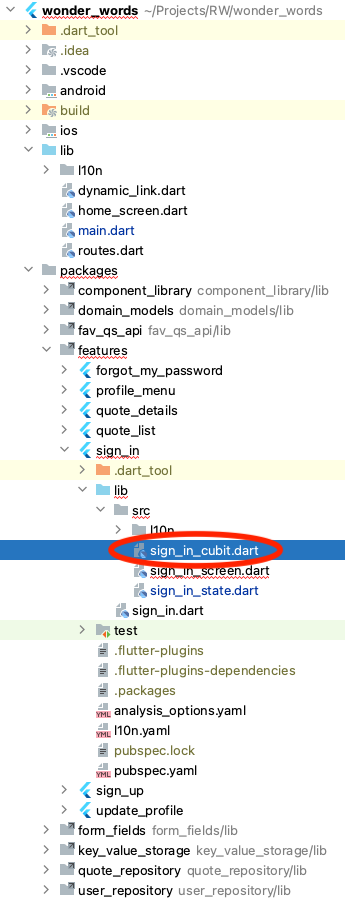
Creating the Cubit¶
Replace // TODO: Create the Cubit. with:
// 1
class SignInCubit extends Cubit<SignInState> {
SignInCubit({
// 2
required this.userRepository,
}) : super(
// 3
const SignInState(),
);
final UserRepository userRepository;
// TODO: Take in UI events.
}
There isn’t much going on yet. You just:
- Created a new Cubit by creating a class that extends
Cubitand hasSignInStatespecified as the state type.SignInStateis the class you created two sections ago. - Requested a
UserRepositoryto be passed through your constructor.UserRepositoryis the class you’ll use to ultimately send the sign-in request to the server. Don’t worry about the internals ofUserRepositoryyet — that’s for Chapter 6, “Authenticating Users”. - Instantiated a
SignInStateusing all the default values as your Cubit’s initial state.
Now, to finish your Cubit’s backbone, replace // TODO: Take in UI events. with:
void onEmailChanged(String newValue) {
final previousScreenState = state;
final previousEmailState = previousScreenState.email;
final shouldValidate = previousEmailState.invalid;
final newEmailState = shouldValidate
? Email.validated(
newValue,
)
: Email.unvalidated(
newValue,
);
final newScreenState = state.copyWith(
email: newEmailState,
);
emit(newScreenState);
}
void onEmailUnfocused() {
final previousScreenState = state;
final previousEmailState = previousScreenState.email;
final previousEmailValue = previousEmailState.value;
final newEmailState = Email.validated(
previousEmailValue,
);
final newScreenState = previousScreenState.copyWith(
email: newEmailState,
);
emit(newScreenState);
}
void onPasswordChanged(String newValue) {
// TODO: Handle the user changing the value of the password field.
}
void onPasswordUnfocused() {
// TODO: Handle the user taking the focus out of the password field.
}
void onSubmit() async {
// TODO: Handle the submit button's tap.
}
These are all public functions you’re creating, so you can call them from your widgets when specific user interactions happen. For example: When the user indicates they’re done editing the email field by tapping elsewhere on the screen, you’ll call the onEmailUnfocused() function to kick-off the validation process. For now, don’t worry about the implementations of onEmailChanged() and onEmailUnfocused(); those are there just to save you some time. You’ll understand everything that’s going on when you implement onPasswordChanged() and onPasswordUnfocused().
You’ve still got plenty of work to do, but at least now the errors are all gone. Before you continue, build and run your app to make sure you’re on the right track. To open the sign-in screen, tap the Profile tab and then Sign In at the top of the screen.
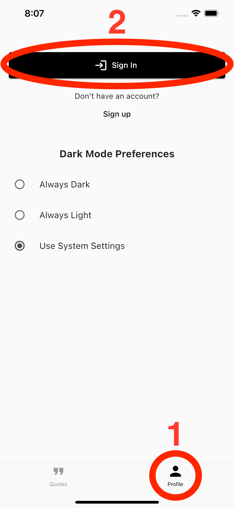
Note
If you’re having trouble running the app, it’s because you forgot to propagate the configurations you did in the first chapter’s starter project to the following chapters’ materials. If that’s the case, please revisit Chapter 1, “Setting up Your Environment”.
Your screen still won’t behave as expected, but it should open just fine and look like this:
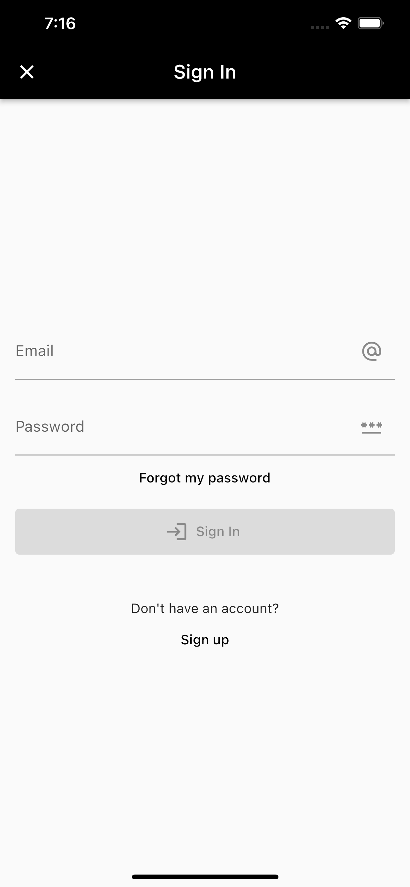
Responding to User Interaction¶
Time to add some meat to some of the functions you’ve just declared in your Cubit. Start inside onPasswordChanged() by replacing // TODO: Handle the user changing the value of the password field. with:
// 1
final previousScreenState = state;
// 2
final previousPasswordState = previousScreenState.password;
final shouldValidate = previousPasswordState.invalid;
// 3
final newPasswordState = shouldValidate
? Password.validated(
newValue,
)
: Password.unvalidated(
newValue,
);
// TODO: Emit the new state.
In the near future, you’ll make your UI call this onPasswordChanged() function whenever the user changes what’s in the password field. When that happens, the code you just wrote will:
- Grab your Cubit’s
stateproperty and assign it a more meaningful name within this function. - Use the
previousScreenStatevariable to retrieve the previous state of thepasswordfield. - Recreate the state of the password field using the
newValuereceived in the function parameter.
Lastly, do you remember the validated and unvalidated constructors you created a few sections ago? You’re using them here to add some motion to the screen:
- You use the
validatedconstructor to force the validation to kick in while the user is still typing only if you were already showing a validation error for that field. - Otherwise, if the previous value in that field hasn’t been validated yet — or if it has been validated and considered valid — you’ll wait until the user takes the focus out of that field to validate it.
Note
The reason you don’t always validate the field as the user types is because that would cause errors to be shown before the user is done typing. Think about how annoying it would be if the user started typing an email with the letter “a”, and you immediately showed an error since “a” isn’t a valid email.
Wow, that was a lot! If it’s any comfort, it only gets easier from here. As proof, replace // TODO: Emit the new state. with:
// 1
final newScreenState = state.copyWith(
password: newPasswordState,
);
// 2
emit(newScreenState);
See? Easier! Here, you just:
- Used the
copyWithfunction from the beginning of the chapter to create a copy of the screen state, changing only thepasswordproperty. - Emitted the new screen’s state.
That’s all for onPasswordChanged(). Now, before jumping into the widgets side of things, you need to take care of that onPasswordUnfocused() function too. Do this by replacing // TODO: Handle the user taking the focus out of the password field. with:
final previousScreenState = state;
final previousPasswordState = previousScreenState.password;
// 1
final previousPasswordValue = previousPasswordState.value;
// 2
final newPasswordState = Password.validated(
previousPasswordValue,
);
// 3
final newScreenState = previousScreenState.copyWith(
password: newPasswordState,
);
emit(newScreenState);
This is simpler than what you did for onPasswordChanged(). You didn’t need a newValue parameter this time since the user hasn’t inserted new data; they’ve just taken the focus out of the field. So, you:
- Grabbed the latest value of the password field.
- Recreated the state of the password field by using the
validatedconstructor to force validation of the latest value. - Re-emitted the screen’s state with the new/validated password state.
Well done! Now, to the widgets side of the curtain…
Hooking up the UI¶
Still in the same folder you’ve been working on, open sign_in_screen.dart, and scroll down to the _SignInFormState class. Replace // TODO: Create the FocusNodes.with:
// 1
final _emailFocusNode = FocusNode();
final _passwordFocusNode = FocusNode();
@override
void initState() {
super.initState();
// 2
final cubit = context.read<SignInCubit>();
_emailFocusNode.addListener(() {
// 3
if (!_emailFocusNode.hasFocus) {
// 4
cubit.onEmailUnfocused();
}
});
_passwordFocusNode.addListener(() {
if (!_passwordFocusNode.hasFocus) {
cubit.onPasswordUnfocused();
}
});
}
@override
void dispose() {
// 5
_emailFocusNode.dispose();
_passwordFocusNode.dispose();
super.dispose();
}
Just ignore the TODOs for now. Here’s what’s happening in the snippet above:
- You created two
FocusNodes: One for the email field and one for the password field.FocusNodes are objects you can attach to yourTextFields to listen to and control a field’s focus. - This is how you get an instance of a Cubit to call functions on it. This
context.read()call only works because the topmost widget in this file has aBlocProvider. Revisit the previous chapter if you need a refresher on all that. - You then added listeners to your
FocusNodes. These listeners run every time the respective field gains or loses focus. Since you’re only interested in knowing when the focus is lost, you added thisifstatement to distinguish between the two events. - Within each listener’s code, you call the corresponding function you just implemented in your Cubit.
- You have to dispose of
FocusNodes.
So far, so good, but still… None of this will work unless you attach these FocusNodes to their corresponding TextFields.
Scroll down to the build() function, and locate // TODO: Attach _emailFocusNode.. Replace it with:
focusNode: _emailFocusNode,
Now do the same for the password field by replacing // TODO: Attach _passwordFocusNode. with:
focusNode: _passwordFocusNode,
Done! You’re now properly notifying your Cubit of when your fields lose focus.
There are still two other things left:
- You also have to notify your Cubit when the user changes the value in those fields.
- Your fields have to rebuild themselves when your Cubit emits a new state; that’s how you show or clear a validation error. Don’t forget this is a two-way street: You have to both notify and listen to a Cubit.
The good news is that, to save you some time, the above is already done for the email field; you’ll learn how to do it by practicing on the password field.
Forwarding Change Events to the Cubit¶
Continuing on your password’s TextField, this time replace // TODO: Forward password change events to the Cubit. with:
onChanged: cubit.onPasswordChanged,
Note
Check out Dart’s documentation if you don’t know why you didn’t have to write the line above as onChanged: (newValue) => cubit.onPasswordChanged(newValue).
Perfect! There’s nothing left for you to send to your Cubit anymore. Now is finally the time to start consuming the Cubit too.
Consuming the Cubit¶
Scroll up a bit and find // TODO: Check for errors in the password state.. Replace it with:
final passwordError =
state.password.invalid ? state.password.error : null;
Yet another one-liner. Here, you’re checking if the password’s field status is invalid, and if it is, you grab the error type.
Note
As counterintuitive as it may seem, you can’t access the errorproperty directly without first checking if the field is invalid. The reason is the error property doesn’t take into account if the field is validatedor unvalidated. If a field is unvalidated, you shouldn’t present any errors to the user.
Now, back in your password TextField, replace // TODO: Display the password validation error if any. with:
// 1
errorText: passwordError == null
// 2
? null
// 3
: (passwordError == PasswordValidationError.empty
// 4
? l10n.passwordTextFieldEmptyErrorMessage
: l10n.passwordTextFieldInvalidErrorMessage),
Going over it step by step:
- You’re using the
errorTextproperty of theTextFieldclass to display a validation error. - If
passwordErrorisnull, you seterrorTexttonull, which will cause your field to display as valid.passwordErroris the property you created in the last step. - Otherwise, if
passwordErrorisn’tnull, you return a differentStringdepending on whether the error isPasswordValidationError.emptyorPasswordValidationError.invalid. - This
l10n.whateversyntax is how you retrieve custom internationalized messages in WonderWords. You’ll learn all about this in Chapter 9, “Internationalizing & Localizing”.
What a section! But there’s only one way to make sure it actually works: Build and run your app.
Open the sign-in screen and play with the fields for a bit. For example, insert two characters on the password field, then tap outside of it. Does it show any errors? Awesome! Now, empty the field. Did the error change? Expect to see something like this:
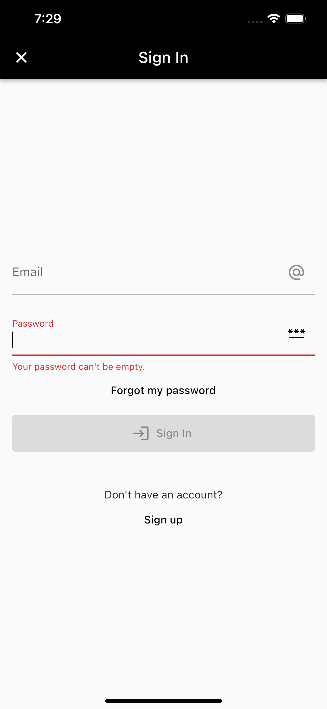
Time for the icing on the cake: the Sign In button.
Submitting the Form¶
Open the Cubit’s file. Replace // TODO: Handle the submit button's tap. with:
// 1
final email = Email.validated(state.email.value);
final password = Password.validated(state.password.value);
// 2
final isFormValid = Formz.validate([
email,
password,
]).isValid;
// 3
final newState = state.copyWith(
email: email,
password: password,
// 4
submissionStatus: isFormValid ? SubmissionStatus.inProgress : null,
);
// 5
emit(newState);
// TODO: Submit the data.
This is what you’re doing here:
- When the user taps the Sign In button, you want to validate the two fields no matter what — even if the user hasn’t touched the fields at all and tapping the button is their first action after opening the screen.
- This is an alternative way of checking if all fields are valid. You could’ve used
email.valid && password.validinstead, but the way you did it here scales better — it’s easier to add and remove fields. - You then create a new state for the screen using the updated fields. Emitting this new state in step five is what will cause any errors to show up in the
TextFields. - If the form is valid, you’ll change the
submissionStatustoSubmissionStatus.inProgressso you can use that information in your widgets to display a loading indicator. - You’re emitting a new state even though you still have work left to do in this function. You’re doing this so your screen updates the fields and puts the loading indicator before you send the actual request to the server.
Now, to finish your work in this Cubit for good, remove // TODO: Submit the data.and insert this:
// 1
if (isFormValid) {
try {
// 2
await userRepository.signIn(
email.value,
password.value,
);
// 3
final newState = state.copyWith(
submissionStatus: SubmissionStatus.success,
);
emit(newState);
} catch (error) {
final newState = state.copyWith(
// 4
submissionStatus: error is InvalidCredentialsException
? SubmissionStatus.invalidCredentialsError
: SubmissionStatus.genericError,
);
emit(newState);
}
}
Here’s the explanation for the code above:
- Notice this
ifhas no correspondingelsestatement. If the fields aren’t valid, you don’t need to do anything else. You’ve already emitted the new state from the code in the previous snippet, and at this point, the screen will already show the errors on the fields. - Finally, if the values inserted by the user are valid, send them to the server.
- If your code gets to this line, it means the server returned a successful response.
UserRepositorywill take care of storing the user information locally and refreshing the other screens for you — details in Chapter 6, “Authenticating Users”. All you have to do here is set yoursubmissionStatustoSubmissionStatus.successso you can use that information in your widget shortly to close the screen. - On the other hand, if you get an error from the server, you change your
submissionStatustoSubmissionStatus.invalidCredentialsErrorif the cause is missing their credentials orSubmissionStatus.genericErrorif the cause is anything else — lack of internet connectivity, for example.
That’s all for the Cubit! Now, similar to what you did for the field validations, your next step is to go back to your UI and hook it up to this new code by:
- Calling this
onSubmit()function from the appropriate places. - Executing logic based on the
submissionStatusproperty.
You’re close…
Forwarding the Submit Event¶
Go back to the sign_in_screen.dart file. Close to the bottom of the file, replace // TODO: Forward the onTap event to the Cubit. with:
onTap: cubit.onSubmit,
Easy peasy, right? Now, scroll up just a bit and replace // TODO: Forward the onEditingComplete to the Cubit. with:
onEditingComplete: cubit.onSubmit,
Here, you’re giving the onEditingComplete event of the password TextField the same treatment you gave to taps on the Sign In button. The onEditingCompletecallback is how Flutter lets you know the user has tapped the done button on the keyboard:
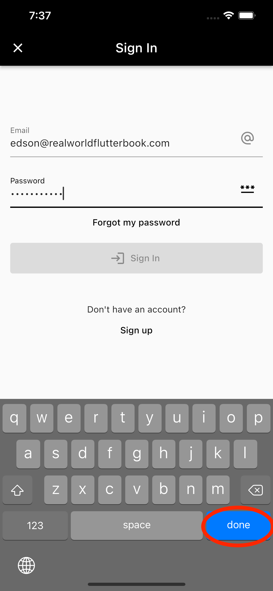
You’re done sending stuff to the Cubit; now you just have to finish consuming it too.
Listening to Changes in the Submission Status¶
First, you’ll want to disable the Sign In button if a submission is already in progress. That way, you protect yourself from sending multiple requests to the server if the user is impatient and keeps tapping the button.
Still in sign_in_screen.dart, find the final isSubmissionInProgress = false; line, and give it a real value by completely replacing it with:
final isSubmissionInProgress =
state.submissionStatus == SubmissionStatus.inProgress;
This is getting too easy…
Notice this isSubmissionInProgress variable is used in a few different places below to disable the TextFields and display an in-progress version of the Sign In button, which does nothing when pressed.
Now, for your last bit of challenge, scroll up to // TODO: Execute one-off actions based on state changes.. Before replacing that TODO with some actual code, notice where it’s located: inside the listener callback of the BlocConsumerwidget. If you don’t recall that part from the previous chapter, here’s a quick recap:
-
A
BlocConsumerwidget is a combination of two widgets: -
BlocBuilder, which gives you thebuildercallback. -
BlocListener, which provides thelistenercallback. -
The
listenercallback differs from thebuilderin the sense that it doesn’t expect you to return any widgets from it and is guaranteed to run once per state change. - That once per state change feature is crucial when you need to execute one-off actions, such as navigating to another screen, displaying a dialog, displaying a snackbar, etc. In other words, it’s crucial when you want to do something instead of return something.
Back to the action. Finally, replace // TODO: Execute one-off actions based on state changes. with:
if (state.submissionStatus == SubmissionStatus.success) {
// 1
widget.onSignInSuccess();
return;
}
final hasSubmissionError = state.submissionStatus ==
SubmissionStatus.genericError ||
state.submissionStatus == SubmissionStatus.invalidCredentialsError;
// 2
if (hasSubmissionError) {
ScaffoldMessenger.of(context)
..hideCurrentSnackBar()
..showSnackBar(
// 3
state.submissionStatus == SubmissionStatus.invalidCredentialsError
? SnackBar(
content: Text(
l10n.invalidCredentialsErrorMessage,
),
)
: const GenericErrorSnackBar(),
);
}
Here’s what’s going on in there:
- If the submission is a success, you call the
onSignInSuccesscallback you received in the screen’s constructor. Ultimately, that will lead to the main app package closing this screen and getting back to whatever screen opened it. The sign-in screen can open on a few different occasions, such as when a signed-out user tries to favorite a quote. - Check if the current
submissionStatuscontains an error. - If yes, display a different snackbar with a more descriptive message, depending on what that error is.
Note
Please refer to the previous chapter if you need a refresher on BlocBuilder, BlocListener, builder, listener, etc.
That’s all for this chapter. You did it! Build and run your app one last time to check on your final product.
Please, keep in mind your sign-in screen will only work as intended if you either completed the previous Exercise unit or continued following along from the challenge project.
To make sure your last snippet of code works, open the sign-in screen and try inserting an unregistered email and password. You should expect to see a snackbar indicating the error at the bottom.
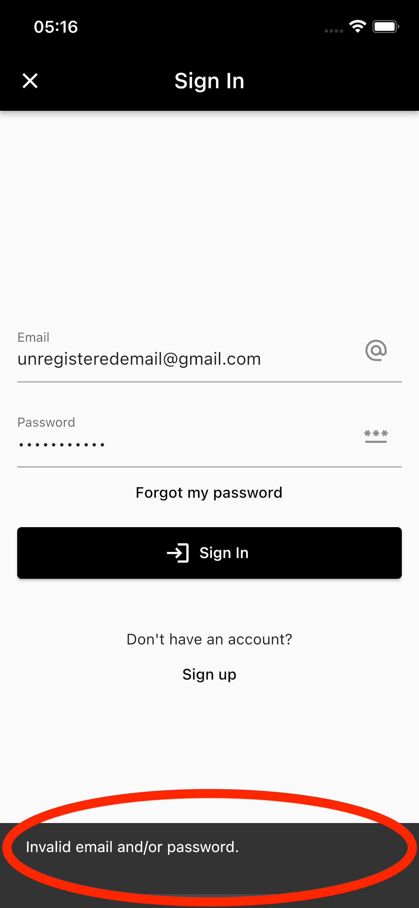
Key Points¶
- Validating values entered by the user can save unnecessary calls to the server and also ensures you won’t contaminate your database with faulty data.
- Adding a
copyWith()function to your data classes allows you to easily create copies of that class’s objects by changing the value of just one or two properties. - The Formz package helps you abstract your form fields by creating classes that gather both that field’s state and validation logic in a single place.
- When working with forms, you need to decide what user events you’ll use as triggers for your validation process. A robust approach is to validate them whenever the user takes the focus out of that field or taps the Submit button.
Where to Go From Here?¶
Before you move on to the next chapter, take some time to study the other form screens on WonderWords: sign_up, profile_menu and forgot_my_password. The differences from the sign-in screen are subtle, but they exist.
When you’re done with that, you’ll be more than ready for your ultimate state management challenge: using actual Blocs to handle pagination, search, filters and more — all at once. Good luck!